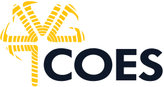
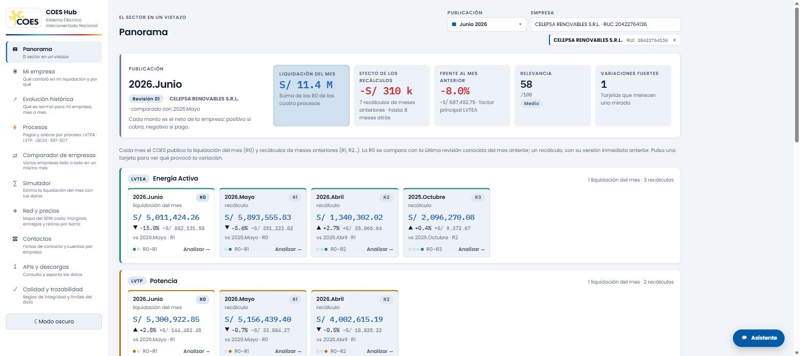
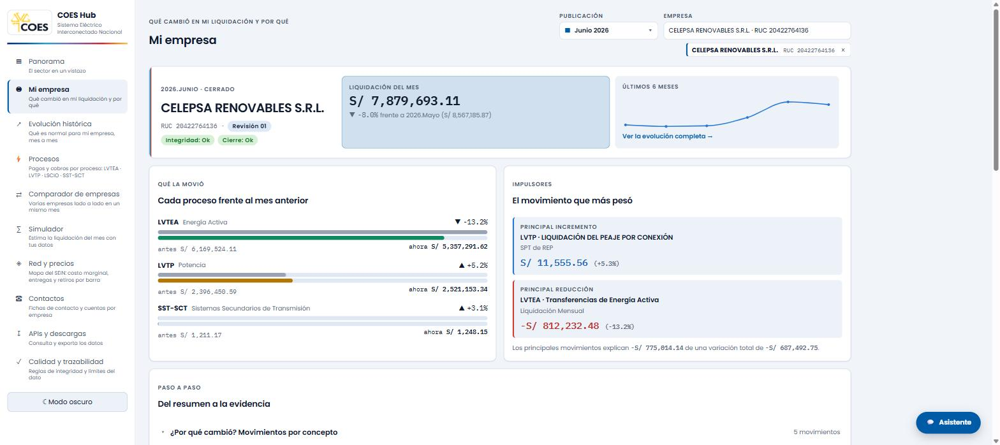
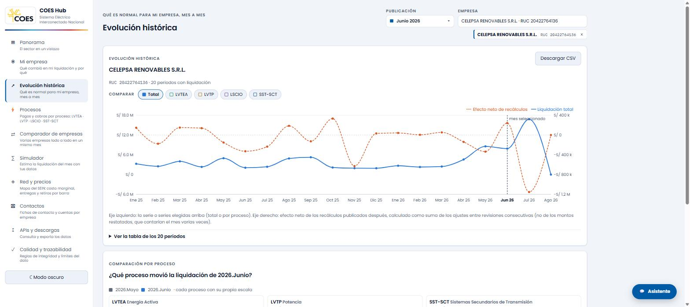
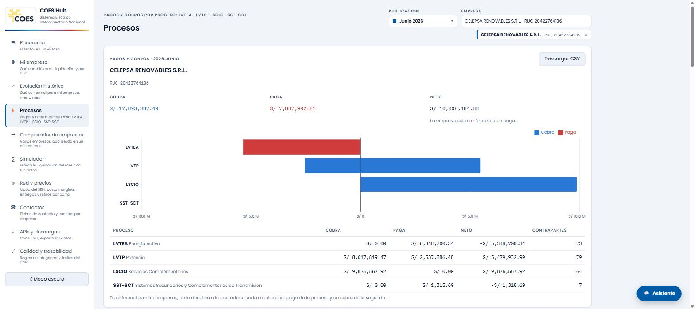
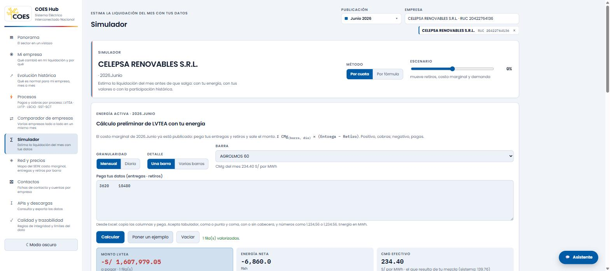
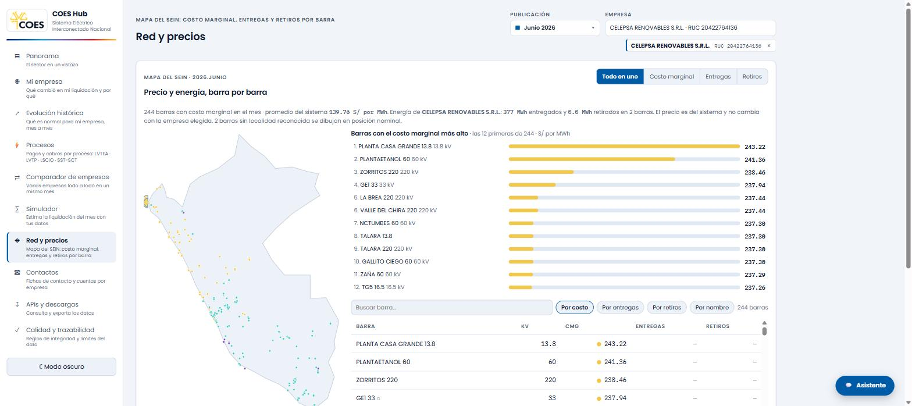

HackaCOES 2026 · Grupo 3
Las liquidaciones del SEIN,
en un solo lugar y con explicación.
Un portal para que el COES y cada empresa del mercado vean qué salió en la publicación del mes, qué cambió respecto de la anterior, por qué cambió y cuánto saldrá la próxima — con trazabilidad hasta el soporte.
Empresas con identidad real
74
RUC y razón social del padrón
Periodos
20
Enero 2025 – Agosto 2026
Barras del SEIN
244
con costo marginal diario
Secciones
10
+ asistente conversacional
El punto de partida
Hoy la liquidación se publica; no se explica.
Lo que vive una empresa cada mes
- Recibe la liquidación del mes (R0) y recálculos de meses anteriores (R1, R2…) mezclados en una misma publicación.
- Cada revisión restata el mes completo: para saber cuánto cambió hay que restar a mano contra la versión anterior.
- Cuatro procesos con lógicas distintas — LVTEA, LVTP, LSCIO, SST-SCT — y decenas de contrapartes.
- No sabe cuánto va a pagar o cobrar hasta que la liquidación sale.
Lo que le cuesta al COES
- Consultas repetitivas: "¿por qué subió mi LVTEA?", "¿a quién le pago?", "¿qué revisión está vigente?".
- Trazabilidad débil entre el monto publicado y su soporte.
- Información valiosa (costo marginal por barra, entregas, retiros) que no llega a quien decide.
- Datos de contacto y cuentas bancarias de los agentes dispersos.
La propuesta
COES Hub: una publicación, una empresa, todas las respuestas.
Se elige la publicación (calendario de meses) y la empresa (razón social o RUC) una sola vez, arriba a la derecha, y las diez secciones responden a esa selección.
Principios de diseño
- Siempre comparado con algo. Una R0 contra la última revisión conocida del mes anterior; un recálculo contra su versión previa.
- Sin jerga. LVTEA, no códigos internos; RUC, no identificadores técnicos.
- Un signo, una lectura. Positivo: la empresa cobra. Negativo: paga. Azul y rojo, en todo el portal.
- Del resumen a la evidencia en dos clics: indicador → componente → soporte.
- Funciona en el teléfono y en modo oscuro.
Sección · Panorama
La publicación de Junio 2026 para CELEPSA RENOVABLES S.R.L.

- Cinco indicadores que cambian con la empresa: liquidación del mes, efecto de los recálculos, variación frente al mes anterior, relevancia y variaciones fuertes.
- Debajo, una tarjeta por cada liquidación o recálculo que salió en la publicación, agrupadas por proceso, con su variación y la cadena R0–Rn.
- Al pulsar una tarjeta: "¿Qué provocó la variación?", componente por componente, ordenado por impacto en soles.
Sin empresa elegida, el mismo panel cuenta el sector: lo que cobran las acreedoras, cuántas empresas liquidaron y cuántas merecen una mirada.
Sección · Mi empresa
Qué cambió en mi liquidación y por qué.

- Liquidación del mes con su variación, sparkline de los últimos seis meses y sellos de integridad.
- Qué la movió: cada proceso frente al mes anterior, con barras antes/ahora.
- Impulsores: el mayor incremento y la mayor reducción, con su concepto y valorización.
- Del resumen a la evidencia: movimientos por concepto, trazabilidad hasta la fuente y reglas de validación ejecutadas.
Ejemplo real de la pantalla: Celepsa bajó −8,0 % frente a Mayo; la causa principal es Energía Activa (−13,2 %), parcialmente compensada por Potencia (+5,2 %).
Sección · Evolución histórica
Qué es normal para mi empresa, mes a mes.

- Veinte periodos con la liquidación total y, en el eje derecho, el efecto neto de los recálculos publicados después.
- Selector de series: total, LVTEA, LVTP, LSCIO, SST-SCT, combinables.
- Comparación por proceso del mes elegido contra el anterior.
- Tabla completa y descarga CSV.
El efecto neto se calcula como suma de ajustes entre revisiones consecutivas, nunca sumando montos restatados: evita contar el mes varias veces.
Sección · Procesos
A quién le pago y de quién cobro, proceso por proceso.

- Cobra, paga y neto del mes; gráfico de barras divergentes por proceso.
- Para cada proceso, las contrapartes con RUC, valorización, monto y porcentaje; las listas largas se pliegan a las seis mayores.
- Meses disponibles a un clic y descarga CSV.
Celepsa en Junio 2026: cobra S/ 17,9 M, paga S/ 7,9 M; el neto positivo viene sobre todo de Servicios Complementarios y Potencia.
Sección · Simulador
Cuánto saldrá, antes de que salga.

- Energía activa: la empresa pega sus entregas y retiros desde Excel (por mes o por día, una barra o varias) y se valorizan con el costo marginal publicado de cada barra y día.
- Tus valores: potencia, servicios complementarios y transmisión secundaria prellenados con lo realmente liquidado; se pueden cambiar.
- Cálculo preliminar por cuota histórica o por fórmula, con escenario ±50 %, comparado con lo liquidado.
- Las fórmulas con tus números: Σ CMg × (Entrega − Retiro), demanda × (precio + peaje), etc.
Sección · Red y precios
El SEIN barra por barra: precio y energía.

- Mapa del Perú con las 244 barras con costo marginal del mes; escala fija de color de morado (barato) a rojo (caro).
- Capas Todo en uno, Costo marginal, Entregas y Retiros; con empresa elegida, la energía es solo la suya.
- Ranking de barras con el costo marginal más alto (o con más energía).
- Perfil diario de cualquier barra, comparando varios meses.
Y además
Lo que completa el portal.
Comparador de empresas
Varias empresas lado a lado en el mismo mes: liquidación, revisión vigente y efecto de recálculos.
Contactos
Ficha por empresa: razón social, RUC, banco, cuenta, CCI, correos, teléfonos. Guardadas en una base de datos (Supabase) consolidada.
APIs y descargas
Todos los datos disponibles por servicio REST, identificando a la empresa por su RUC. Descarga CSV en cada pantalla.
Asistente
Responde preguntas sobre el mes, una empresa o un término ("¿Cuánto liquidó Celepsa?", "¿Qué es el monto restatado?") y lleva a la sección correcta.
Calidad y trazabilidad
Reglas de integridad que se ejecutan y, sin rodeos, qué datos son publicados y cuáles proyectados o simulados para la demostración.
Accesible y móvil
Contraste verificado, navegación por teclado, modo oscuro y diseño para teléfono.
Cómo está construido
Tres piezas estándar, portables a cualquier nube.
Portal web
React 19 + Vite. Estático, se sirve desde un CDN.
Hoy en Vercel · hackacoes-grupo-3.vercel.appAPI de liquidaciones
Python · FastAPI. Publicación, revisiones, pagos y cobros, red, simulador.
Hoy en Render · coes-liquidaciones-api.onrender.comDatos
Capa curada (parquet) generada desde los reportes del COES + Postgres para lo que se escribe.
Hoy en Supabase (contactos) · migración completa en hoja de rutaCalidad del código
- 102 pruebas automáticas en el backend, 42 en el frontend.
- Especificación de diseño con 24 decisiones documentadas.
- Cada push a
masterdespliega solo.
Datos que usa
- Liquidaciones por proceso y revisión, calendario de publicaciones.
- Costo marginal diario por barra; entregas y retiros por punto y barra.
- Padrón de empresas con RUC y razón social.
Para ponerlo en producción
Qué necesita el COES.
De su lado
- Los datos oficiales: los mismos reportes que alimentan el prototipo, completos y sin anonimizar (liquidaciones por proceso y revisión, costos marginales, entregas y retiros, catálogos). Basta un acceso de lectura o una exportación mensual.
- Un responsable de TI que administre las cuentas de los servicios y el dominio (p. ej.
hub.coes.org.pe). - Definir el acceso: quién entra y qué ve. Se activa autenticación con correo corporativo o el SSO del COES; cada empresa ve solo lo suyo.
Del lado del proyecto · 3 a 4 semanas
- Migrar la capa de datos a Postgres y consultar por periodo.
- Autenticación y permisos por empresa.
- Carga automática cada vez que el COES publica.
- Reemplazar lo proyectado o simulado por los datos oficiales.
El código ya está desplegado y funcionando; el trabajo pendiente es conectarlo a los datos reales y al control de acceso.
Hoja de ruta
Del prototipo al canal oficial.
Prototipo desplegado
- 10 secciones funcionando con datos del kit.
- Identidad real de 74 empresas.
- Contactos en base de datos.
- Portal público y API documentada.
Producción institucional
- Datos oficiales en Postgres, carga mensual automática.
- Autenticación y permisos por empresa.
- Dominio del COES, alta disponibilidad, respaldo.
- Capacitación al equipo de liquidaciones.
Canal oficial
- Histórico completo y costo marginal a 15 minutos.
- Notificaciones a las empresas al publicar.
- SSO corporativo, auditoría y SLA.
- Integración con los sistemas internos del COES.
Una publicación, una empresa,
todas las respuestas.
Portal en línea: hackacoes-grupo-3.vercel.app
API: coes-liquidaciones-api.onrender.com/docs
Código: github.com/Rafitipiti/hackacoes-grupo-3
En una frase
Para operar, el COES necesita tres servicios estándar en la nube, un responsable de TI y entregar los datos oficiales. El código ya está listo; conectarlo toma tres a cuatro semanas.